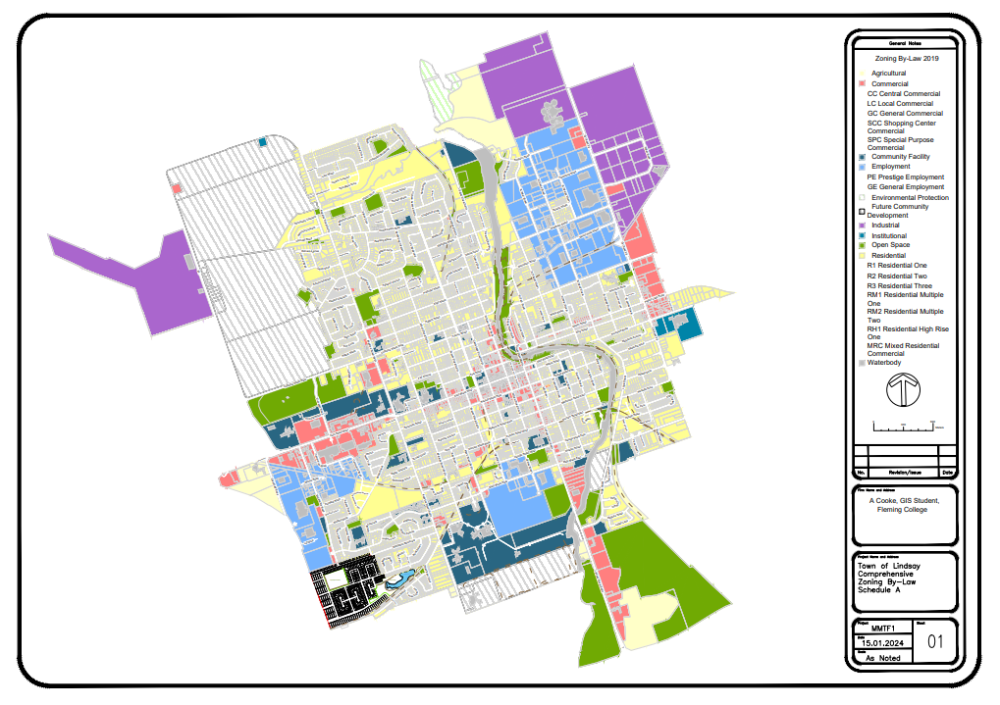
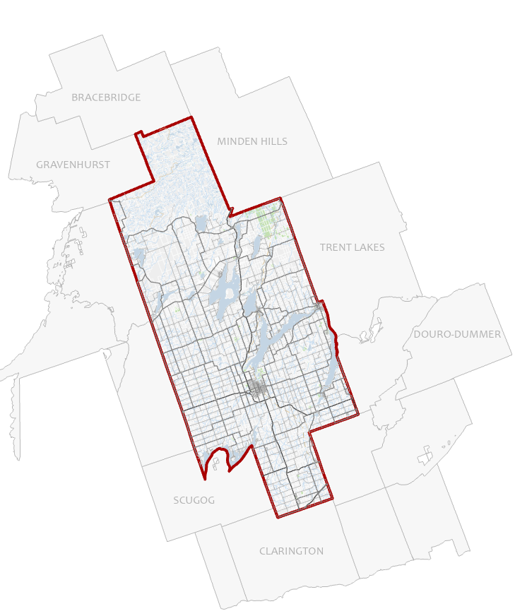
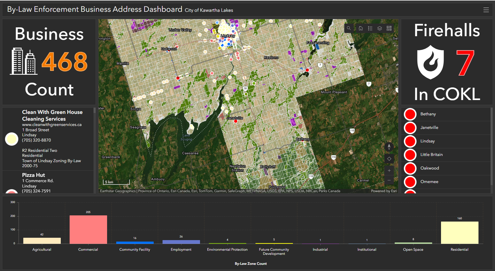
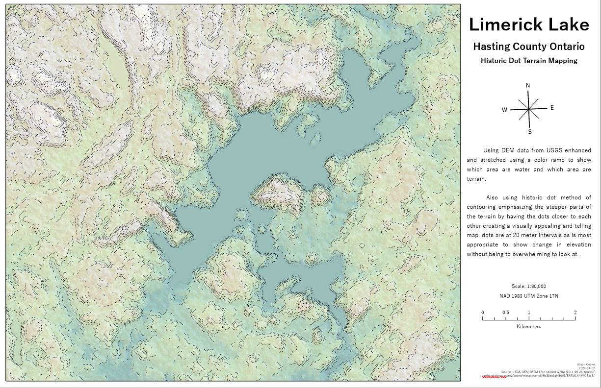
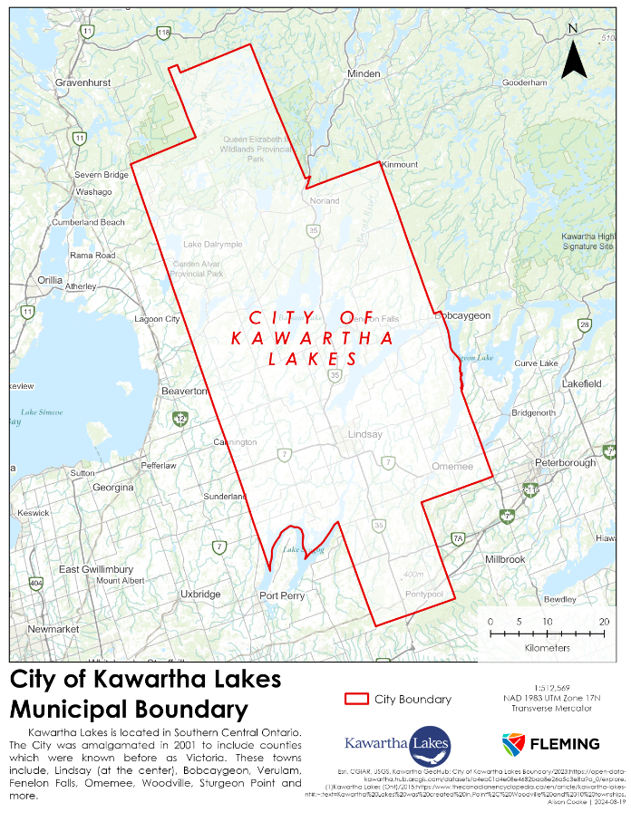
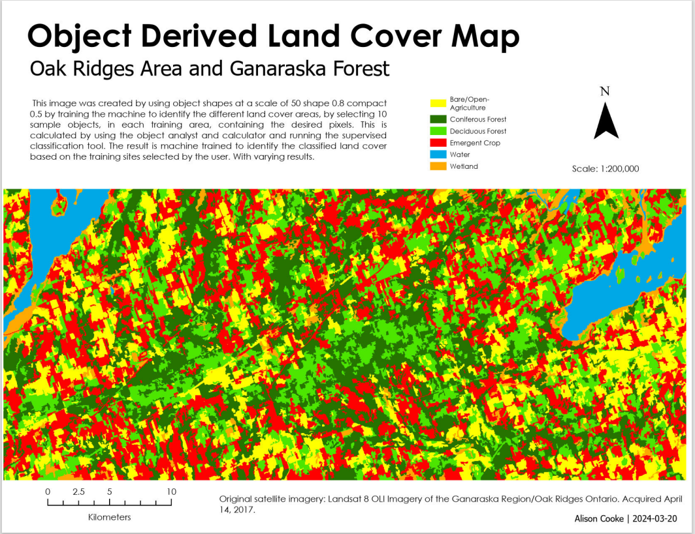
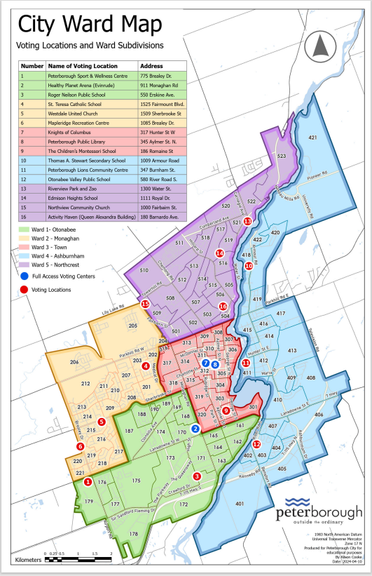
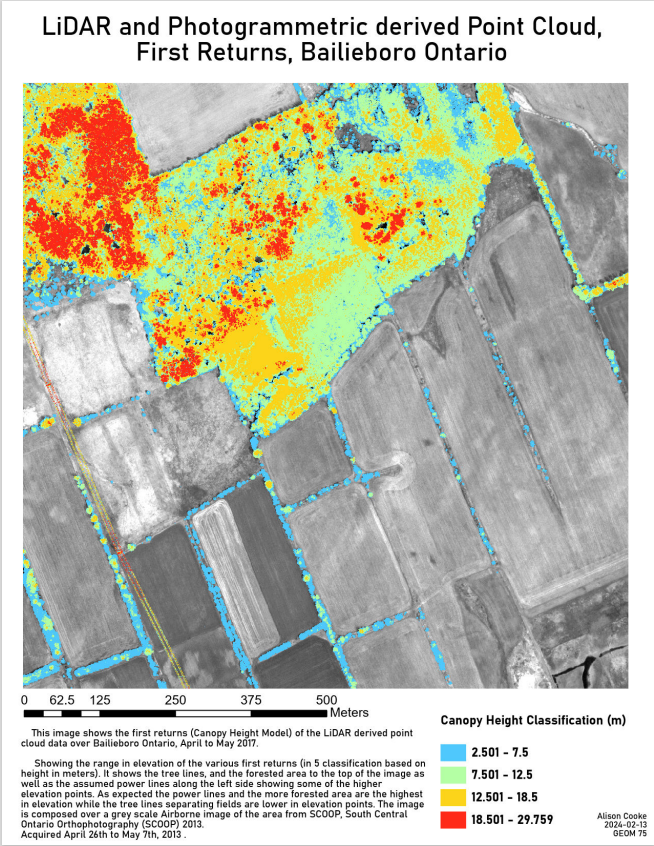

1 / 27

1. Landsat derived imagery, using Catalyst PCI Geomatics and ArcPro
2 / 27
2. ArcPro Reference map over Airdrie Alberta
3 / 27
3. Line Mapping, Adobe Illustrator Avenza MaPublisher, Radial lines showing travel patterns
4 / 27
4. Line Mapping, Adobe Illustrator Avenza MaPublisher, Distributive flow lines showing immigration into Greece
5 / 27
5. Line Mapping, Adobe Illustrator Avenza MaPublisher, Distributive flow lines showing immigration into Greece, Top 20 travel destinations
6 / 27
6. Line Mapping, Adobe Illustrator Avenza MaPublisher, Radial lines showing immigration patterns, with proportional dot showing amount of people from each country
7 / 27

7. Greyscale Large scale map of Airdrie using ArcPro and Adobe MaPublisher
8 / 27
8. Niagara escarpment, stereo pair imagery to see in 3-D false colour composite
9 / 27
9. An orthorectified image using road data, aerial imagery and Landsat false colour composite image, layout done in ArcPro
10 / 27
10. An orthorectified image using road data, aerial imagery and Landsat false colour composite image
11 / 27
11. Land use map of Airdrie Alberta, using ArcPro and Adobe MaPublisher
12 / 27
12. Anticosti Island Quebec, Travel to the Island map, Using, ArcPro, Photoshop, Adobe MaPublisher, highlighting roads on the island
13 / 27

13. Anticosti Island Quebec, Travel to the Island map, Using, ArcPro, Photoshop, Adobe MaPublisher, highlighting the landscape and 3-Dimagery of the island
14 / 27

14. Travel to Canada map/infographic, using ArcPro and Adobe Avenza MaPublisher
15 / 27

15. AutoCad Map 3-D, parcel data from Lindsay Kawartha Lakes highlighting the new subdivision at the bottom left corner.
16 / 27
16. Proposed neighbourhood, including zoning designations, AutoCAD file downloaded into ArcPro to make layout and style.
17 / 27

17. Basemap (large scale), Ottawa, Using ArcOnline dynamic vector map package, created in ArcPro and uploaded onto ArcOnline
18 / 27
18. Basemap (small scale), Ottawa, Using ArcOnline dynamic vector map package, created in ArcPro and uploaded onto ArcOnline
19 / 27
19. Basemap of Lindsay and Kawartha Lakes, green land indicating city owned and maintained lands
20 / 27

20. Basemap Small scale of Kawartha Lakes and contextual municipalities surrounding
21 / 27

21. Dashboard showing business addresses and emergency services location for Kawartha Lakes as well as land use designations, Generalized in ArcPro and uploaded to ArcOnline
22 / 27

22. Historic dot mapping technique, also DEM hill shade ArcPro
23 / 27

23. Map of Kawartha Lakes
24 / 27

24. Object recognition using Catalyst Earth and ArcPro, identifying land cover using object samples from Landsat imagery to classify land cover.
25 / 27

25. Peterborough Ward Map, updated from the Peterborough old ward map data package
26 / 27

26. Point cloud showing only the first returns highlighting tree cover and powerlines
27 / 27
27. Viewshed derived from DEM and point data, created using ArcPro